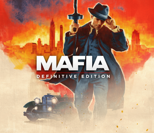

MAFIA
MAFIA
Mafia je akční dobrodružná hra z roku 2002 vyvinutá společností Illusion Softworks a vydaná společností Gathering of Developers. Hra byla vydána pro Microsoft Windows v srpnu 2002 a později portována na PlayStation 2 a Xbox v roce 2004. Jedná se o první díl ze série Mafia. Příběh se odehrává ve fiktivním městě Lost Heaven v Illinois ve třicátých letech 20. století a sleduje vzestup a pád taxikáře, z něhož se stal mafián Tommy Angelo v zločinecké rodině Salieri.
Mafia obdržela pozitivní recenze na verzi pro Windows, přičemž kritici hru chválili za její komplexní příběh a realismus, zatímco verze pro PlayStation 2 a Xbox obdržely smíšené recenze. Pokračování, Mafia II od 2K Czech, bylo vydáno v srpnu 2010 a třetí hra, Mafia III od Hangar 13, byla vydána v říjnu 2016. Remake hry s názvem Mafia: Definitive Edition, rovněž vyvinutý Hangar 13, vyšlo v září 2020.
Dějová hra Mafie se skládá z jízdy, hlavně z lehkých plaveb městem mezi různými lokacemi, stejně jako z honiček a závodů; zbytek hry je založen na pěší navigaci a střelbě z pohledu třetí osoby – vše je propojeno s cutscénami. Kromě města a venkova jsou zahrnuty detailní interiéry, jako je městské letiště, muzeum, kostel, hotel, opuštěné vězení, restaurace a bar Dona Salieriho. Používají se změny počasí a cykly den/noc, i když na rozdíl od Grand Theft Auto se mise konají ve stanovený čas a počasí je po dobu trvání úrovně fixní.
51 klasických amerických aut po městě lze řídit v Mafii plus 19 bonusových aut (z toho 5 závodních modelů), které lze odemknout po hlavním režimu a otevření nového herního režimu. Auta jsou představována pravidelně – na začátku hry jezdí po ulicích města modely z počátku 20. let, zatímco modely z počátku 30. let se začínají objevovat v pozdějších fázích hry. Všechna vozidla jsou založena na skutečných autech z té doby, i když byla přejmenována a přepracována kvůli problémům s autorskými právy.
Policie eviduje hráče za drobné přestupky, jako je překročení rychlosti nebo jízda na červenou, a dopravní nehody způsobí fyzické poškození jedoucího hráče. I když jsou k dispozici jiné formy dopravy, jako jsou tramvaje a vyvýšené koleje, je možné na nich pouze jezdit a hráč je nemůže řídit.
Mafia je známá tím, že má obsáhlou fyziku poškození na téměř všech vozidlech, a to dokonce tak daleko, že využívá deformaci v reálném čase ve srovnání s vozidly v jiných hrách, které používaly předem připravené modely poškození.---- I když jsou menší a slabší vozidla podstatně robustnější než jejich skutečné protějšky, jsou menší a slabší, než se porouchají a nakonec explodují, než velká obrněná vozidla. Ve srovnání s jinými hrami stejného žánru je zde přidáno více realismu, jako je schopnost propíchnout palivovou nádrž, přehřát motor a schopnost rozbít převodovky. Mnoho vnějších komponentů (jako jsou okna, pneumatiky, světlomety a nárazníky) lze z většiny vozidel odstranit fyzickými prostředky, jako je nárazová jízda, údery tupými zbraněmi (pěsti, baseballová pálka) a také střelba ze zbraní.
Dokončením hlavní příběhové linie se odemkne režim „Freeride Extreme“, který je v podstatě stejný jako Freeride, ale s přidanou výhodou kaskadérských skoků, vedlejších úkolů a nedostatku policejních hlídek. Vedlejší mise v tomto režimu sahají od triviálních, jako je přenášení balíčků nebo zabíjení gangsterů, až po extrémní a někdy výstřední, jako je pronásledování mimozemské vesmírné lodi nebo řízení náklaďáku s výbušninami při určité rychlosti.
MAFIA II

MAFIA II
Mafia II je akční adventura z roku 2010 vyvinutá společností 2K Czech a vydaná společností 2K Games. Bylo vydáno v srpnu pro Microsoft Windows, PlayStation 3 a Xbox 360. Hra je pokračováním Mafie z roku 2002 a druhým pokračováním série Mafia. Příběh se odehrává ve fiktivním městě Empire Bay (založeném na New Yorku, Chicagu, San Franciscu, Los Angeles, Bostonu a Detroitu) v polovině čtyřicátých let a v roce 1951 a sleduje Vita Scalettu, mladého sicilsko-amerického mafiána a válečného veterána. , který se stane chycen v boji o moc mezi mafiánskými zločineckými rodinami ve městě, zatímco se pokouší splatit dluhy svého otce a zajistit si lepší životní styl.
Hra se hraje z pohledu třetí osoby a její svět se pohybuje pěšky nebo autem. Trestná činnost hráčské postavy může podnítit reakci orgánů činných v trestním řízení, měřeno „hledaným“ systémem, který řídí agresivitu jejich reakce. Vývoj začal v roce 2003, krátce po vydání první hry Mafia. Při vydání získala Mafia II obecně pozitivní recenze od kritiků, s chválou zaměřenou zejména na příběh, hratelnost a postavy, ale kritizován byl omezující světový design a nedostatek funkcí z jiných sandboxových her.
Verzi skládající se z předchozího obsahu ke stažení s názvem Mafia II: Director's Cut vydala Feral Interactive v prosinci 2011. Po Mafii II následovalo pokračování Mafia III v říjnu 2016. Aby se shodovalo s remakem Mafie z roku 2002, Mafia II: Definitive Edition, remasterovaná verze hry vyvinutá společností D3T, byla vydána společností 2K Games 19. května 2020. obdržel smíšené recenze, zejména pro své chyby a závady, které nebyly přítomny v původní hře. Tato Definitive Edition byla také součástí balíčku Mafia: Trilogy, vydaného 25. září 2020.
Hra je zasazena do éry 40. a 50. let 20. století Empire Bay, fiktivního města založeného na New Yorku, Chicagu, San Franciscu, Los Angeles, Bostonu a Detroitu. Ve hře je 50 vozidel a také licencovaná hudba z té doby. V závislosti na počasí v průběhu hry se vozidla chovají odlišně. Například během prvních kapitol v zimě je pravděpodobnější, že vozidla na vozovce kvůli námraze uklouznou.
Mnoho střelných zbraní z předchozí hry se vrací, jako je samopal Thompson a Colt 1911, stejně jako brokovnice s pumpičkou. Ve hře se také objevují nové zbraně z druhé světové války, MG 42 a Beretta Model 38.
Interakce s předměty v prostředí zahrnuje dvě akční tlačítka: standardní akci a „násilnou“ akci (například při krádeži auta se hráč může rozhodnout, že buď odemkne zámek, nebo rozbije sklo okna), používaná v kontextu situací. Součástí je mapa jako v původní hře Mafia, ale systém kontrolních bodů byl zcela přepracován. Mezi nové ovládací prvky patří systém krytí, který hráči umožňuje krýt se za předměty (jako jsou generátory, zdi a velké bedny) a střílet nepřátele, místo aby se za nimi jen vcházel do svévolné přikrčené pozice. Tato funkce poskytuje taktickou podporu proti nepřátelům a stala se klíčovou technikou žánru.
Kulisy hry jsou vytvářeny herním enginem v reálném čase. Pokud například hráč jede v autě a spustí se cutscéna, hráč bude řídit stejné auto ve stejném stavu (poškozené nebo neporušené) a bude mít na sobě stejné oblečení. Existují však výjimky, jako je úvodní sekvence a cutscéna, která zobrazuje výbuch Empire Arms Hotel v kapitole 10, což jsou předrenderované videoklipy.
Hra obsahuje tři různé rozhlasové stanice ve hře (Empire Central Radio, Empire Classic Radio a Delta Radio) s licencovanou hudbou, zprávami a reklamami. Rozhlasové stanice zahrnují hudbu různých žánrů, včetně rock and rollu, big bandu, rhythm and blues a doo-wop, s licencovanými písněmi od Chucka Berryho, The Everly Brothers, Deana Martina, Little Richarda, Muddy Waterse, Buddyho Hollyho & The Crickets, Bing Crosby, Bill Haley & His Comets, The Chordettes, Ritchie Valens, Bo Diddley, Ricky Nelson, Eddie Cochran, The Champs, The Drifters, The Fleetwoods, Screamin' Jay Hawkins, Nat King Cole, The Chords a The Andrews Sisters.
MAFIA III

MAFIA III
Mafia III je akční dobrodružná videohra z roku 2016 vyvinutá společností Hangar 13 a vydaná společností 2K Games. Vyšlo v říjnu 2016 pro PlayStation 4, Xbox One a Microsoft Windows, v květnu 2017 pro macOS[2] a v říjnu 2021 pro Google Stadia. Je to pokračování Mafie II a třetí díl ze série Mafia. Příběh se odehrává ve fiktivním městě New Bordeaux (založeném na New Orleans) v roce 1968 a sleduje bývalého zločince a vietnamského veterána Lincolna Claye, který je nucen vrátit se k životu zločinu, aby pomohl své adoptivní rodině urovnat problémy s místní pobočkou mafie. Poté, co mafie zradila a vyvraždila jeho rodinu, se Lincoln vydává na honbu za pomstou, přičemž pomalu buduje zločinecké impérium a chopí se moci dalších zločineckých organizací ve městě.
Vývoj Mafie III
Začal brzy po vydání Mafie II, ale zpočátku měl problémy. 2K Czech, vývojář prvních dílů série, dohlížel na restrukturalizaci, přičemž velká část vývojového týmu byla přidělena novému studiu společnosti, Hangar 13. Poté, co se vývojový tým v roce 1968 rozhodl znovu vytvořit New Orleans, čerpal vliv z předchozí série. projekty a navrhl hru kolem Clay tak, aby replikovala základní strukturu svých předchůdců. Velká část vývojové práce tvořila výtvor otevřeného světa a několik členů týmu provedlo terénní výzkum v Louisianě, aby pořídilo záběry pro návrhářský tým. Soundtrack hry obsahuje několik licencovaných písní složených různými hudebníky, kteří byli v daném časovém období aktivní.Po vydání, hra obdržela smíšené recenze, s chválou zaměřenou na její příběh, postavy, temnější témata a soundtrack. Některé herní mechanismy a přítomnost technických problémů však vyvolaly kritiku. Hra byla komerčním úspěchem a po celém světě se jí prodalo sedm milionů kopií. Dne 19. května 2020, současně s remakem první hry Mafia, společnost 2K Games vydala verzi Mafia III obsahující všechny balíčky obsahu ke stažení s názvem Mafia III: Definitive Edition. Tato Definitive Edition byla později zahrnuta do balíčku Mafia: Trilogy, vydaného 25. září 2020.
Mafia III se odehrává téměř dvě desetiletí po svém předchůdci a odehrává se koncem 60. let ve fiktivním americkém městě New Bordeaux. Město se nachází v jižních státech Ameriky a na pobřeží a skládá se z ostrovních čtvrtí, průmyslových komplexů a přístavů, výškových kanceláří a bytů, slumů, předměstských domů a historických čtvrtí, které jsou vzájemně propojeny železnicemi a rozsáhlou silniční sítí s velkou bažinou. oddělující město od pobřeží. Město se skládá ze směsi kultur včetně Afroameričanů, Irů, Italů a Haiťanů a je většinou ovládáno jednou mafiánskou zločineckou rodinou – rodinou Marcano – spolu s menšími organizacemi, jako je Irish Mob, Haitian Mob, „Black Mob“ , a Southern Union, skupina bílých rasistů.
Design města, včetně jeho architektonických stylů, kultur a životního stylu, byl ovlivněn skutečnými aspekty jižních Spojených států během časového období, především města New Orleans. Příběh hry se zaměřuje především na toto prostředí, zatímco obsah ke stažení rozšiřuje prostředí o další místa v okolí New Bordeaux.